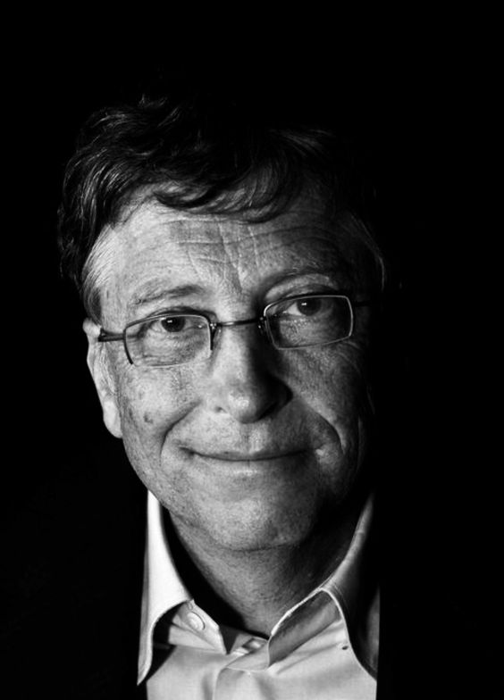

Carreira de Bill Gates
Bill Gates cofundou a Microsoft em 1975, ao lado de Paul Allen, marcando o início de uma revolução tecnológica. A empresa começou com o desenvolvimento de software para microcomputadores e, em 1981, lançou o sistema operacional MS-DOS, que rapidamente se tornou o padrão para os PCs da época. Esse foi o primeiro grande marco da Microsoft, estabelecendo a empresa como um nome de destaque no emergente mercado de computadores pessoais.
Sob a liderança de Gates, a Microsoft continuou a inovar e, em 1985, lançou o Windows, um sistema operacional com interface gráfica que facilitava o uso dos computadores para milhões de pessoas. O Windows logo se tornou a plataforma dominante, presente em quase todos os PCs ao redor do mundo, transformando o panorama tecnológico e consolidando a Microsoft como a principal fornecedora de software. Com seu modelo de negócios inovador, Gates ajudou a popularizar o uso de computadores pessoais, tornando-os acessíveis tanto para empresas quanto para o público geral, o que impactou profundamente a forma como o mundo trabalha, se comunica e acessa informação. O legado de Gates na Microsoft vai além dos produtos; sua visão estratégica e foco em inovação ajudaram a empresa a diversificar seu portfólio e a expandir para outras áreas, como a computação em nuvem e inteligência artificial, assegurando que a Microsoft permanecesse relevante e na vanguarda da tecnologia por décadas.